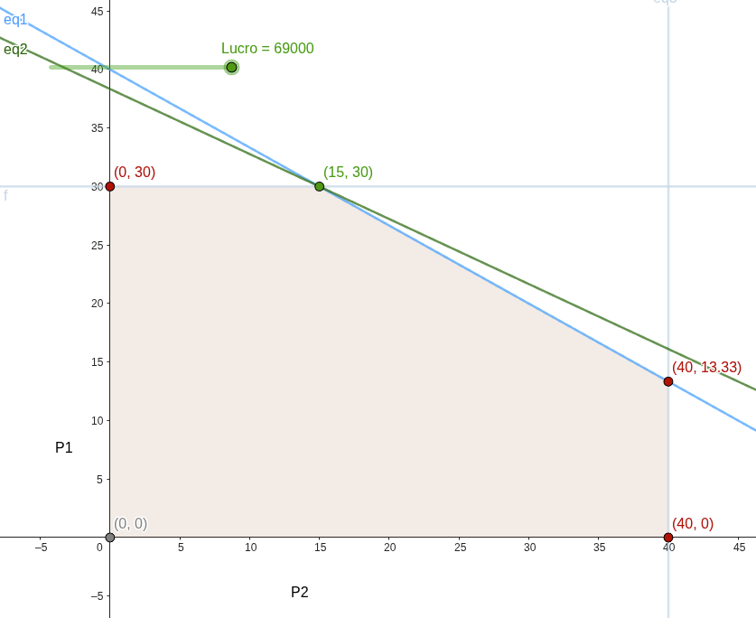

<----- Back to Exercises Index
A factory produces two products, being P1 and P2. The unitary profit of P1 is 1000 m.u. while the one of P2 is 1800 m.u.. The factory needs 20 hours to build a unit of P1 and 30 hours to fabricate one unit of P2. The anual production time available for this is 1200 hours.
The expected demand for each product is 40 anual units of P1 and 30 anual units of P2. Which is the production plan so that the business maximizes it's profit on these items?
Objective: Maximize the profit of the given products.
Decision Variables: Product 1 and Product 2
Restrictions: hours-per-unit, expected demand
Table to organize the given information:
| - | profit | hours | demand |
| Product 1 | 20 | 300 | $$\leq 40$$ |
| Product 2 | 40 | 100 | $$\leq 30$$ |
| $$\leq 1200$$ |
Objective Function: $$Z=1000x+1800y$$
Organizing the inequations, we have the following:
$$20x+30y\leq1200 \therefore 2x+3y\leq120$$ (our resources)
$$x\leq40$$ $$y\leq30$$(restrictions on demand)
This case is different from the first exercise, since it only gives us one inequation we cannot make a system of equations. Instead, we will use this inequation to find x and y:
By turning the inequations into equations, we have that:
$$x\leq40\rightarrow x=40$$ $$y\leq30\rightarrow y=30$$Which we can replace in the first equation to find the new points, in this case, we will find two sets, since we already have one for each:
For x:
$$(40,?)$$ $$2(40)+3y=120 \therefore 80+3y=120 \therefore y=\dfrac{120-80}{3}$$ $$y≃13.333\ldots$$ $$(40,13.333\ldots)$$For y:
$$(?,30)$$ $$2x+3(30)=120 \therefore 2x+90=120 \therefore x=\dfrac{120-90}{2}$$ $$x=15$$ $$(15,30)$$With that we have:
$$(40,13.333\ldots)$$ $$(15,30)$$However we can still find the other viable points:
$$x=0, \ y=30\rightarrow(0,30)$$ $$x=40, \ y=0\rightarrow(40,0)$$In the end, the viable points are:
$$\begin{array}{ccc} (0,0) & (0,30) & (40,0) \\ & (40,13.333) & (15,30) \end{array}$$| Point | Z value | |
|---|---|---|
| (0, 0) | $$1000(0) + 1800(0)$$ | 0 |
| (0, 30) | $$1000(0) + 1800(30)$$ | 54.000 |
| (15, 30) | $$1000(15) + 1800(30)$$ | 69.000 |
| (40, 13.33) | $$1000(40) + 1800(13.33)$$ | ≈ 63.994 |
| (40, 0) | $$1000(40) + 1800(0)$$ | 40.000 |
We can observe that the point that maximizes this function is (15,30).
$$Zmax=69000$$This means that we can achieve the maximum profit of 69.000 m.u. by selling 15 units of Product 1 and 30 units of Product 2.
We can also represent this problem in a Cartesian Plane.
In this case the maximum profit is the function that goes from (0,0) to (15,30), as being inside the viable region given by the restrictions.